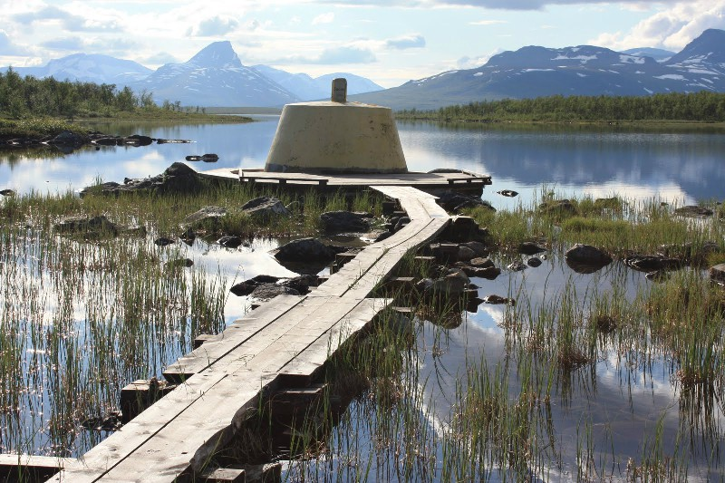

Название страны происходит от древнескандинавского Norreweg — «северный путь», которое первоначально относилось к прибрежному морскому пути, по которому норманны выходили в северные моря. Впоследствии этим названием стали обозначать западное побережье Скандинавского полуострова вдоль морского пути, а затем и возникшее здесь государство. Страна имеет два названия, на обеих версиях норвежского языка — Norge на букмоле и Noreg на нюношке.
История Норвегии насчитывает более 10 тысяч лет. Именно 10 тысяч лет назад на Скандинавском полуострове, а именно на его северо-западе, появились первые люди. Это были переселенцы, которые по одной из версий историков являются близкими родственниками племенам датчан, которые оттеснили финнов на юге. Но есть и другая версия. Согласно ей, переселенцы пришли в Норвегию с севера. Однако учёные опровергают эту теорию, так как наскальные рисунки, найденные на севере страны, гораздо моложе тех, что были обнаружены в южной части государства. Первые поселенцы жили на побережье, основным их занятием являлось рыболовство. Земледелие практически не развивалось.
Изначально все жители объединялись в фюльке, которые представляли собой общины, управляемые королём - ярлом. Чтобы защититься от внешних угроз, вне норвежцы должны были объединиться вместе и завершить постоянные междоусобицы. Для этого было необходимо общее право. Для этого стали собираться специальные собрания, где присутствовали представители всех фюльке, они пытались найти решение сложных вопросов.
В истории Норвегии одним из важных этапов является появление викингов. В Норвегии резко возросла численность населения, поэтому норвежцам приходилось сдвигаться на восточную часть острова. Земли там были малоплодородные, но выхода не было и приходилось осваивать их. Некоторые норвежцы решили заняться пиратством, то есть захватом чужих земель, так и появились викинги. Викинги захватили немало земель,среди них Шотландия, Англия, Ирландия, Франция. Гренландия и Исландия стали колониями викингов. Все европейские страны боялись нашествия викингов.
Норвегия объединилась благодаря Харольду Прекрасноволосому. В конце XIX века он смог одолеть несколько ярлов в битве при Хавсфьорде. Те, кто был побеждён, должны были присоединиться к викингам, так как у них не было выхода. А тем временем в Норвегии началось объединение государства, то есть проводилась политика централизации земель. Язычество долго было распространено на территории Норвегии. Потомок Харольда, Олаф II смог побороть язычество и ввести в Норвегии христианство.
В Норвегии была слабо развита торговля, постоянно были эпидемии, чума унесла много жизней, а уровень урбанизации страны был низок. Норвегия сильно ослабла, поэтому ей пришлось стать частью Кальмарской унии. Это произошло в 1397 году. Швеция покинула союз в 1523 году, а Норвегия всё ещё оставалось союзником Дании, это длилось на протяжении долгого времени. В эпоху наполеоновских войн Дания боролась на стороне Франции и осталась в проигрыше. В 1807-1814 годах была Англо-датская война, в которой Дания потерпела поражение и потеряла Норвегию. Норвегия вынуждена была вступить в союз со Швецией. По условиям союза в Норвегии могло быть своё правительство и Конституция.
Первая и единственная Конституция Норвегии была принята в 1814 году после заключения союза со Швецией. Данная Конституция действует по сей день и является одной из старейших в мире. Главный закон страны был принят в Эйдсволле, который находится неподалёку от Осло. Исходя из данного документа, Норвегия была провозглашена свободным государством, однако это полностью противоречило заключённому со Швецией союзу. Между Швецией и Норвегией началась непродолжительная война, где победу одержали шведы. В итоге норвежскому правительству пришлось внести поправки в Конституцию. Уния просуществовала до 1905 года. После распада союза Норвегия стала суверенным государством.
На протяжении всей истории Норвегия предпочитала не ввязываться в международные конфликты, правительство государства всегда старалось придерживаться нейтралитета. Так было во время мировых войн в XX веке. В 1940 году войска Гитлера оккупировали страну, а правительство приняло решение бежать в Великобританию. Страной начали править профашистские политики. Граждане пытались оказать сопротивление оккупантом, но всё оказалось безуспешным. Советские войска освободили Норвегию в 1945 году, тогда страна потеряла уже более 10 тысяч жителей.
После окончания войны правительство государства провело немало правильных реформ по восстановлению страны. В этом помогло большое количество запасов нефти, которые были обнаружены в Северном море. Благодаря этому экономика государства восстановилась за довольно короткое время. Сейчас Норвегия состоит во многих объединениях государств, а также является одной из самых развитых стран мира.
Материковая часть Норвегии расположена между 57° и 72°[10] северной широты и 4° и 31° восточной долготы и простирается на 1770 км. Её территория тянется узкой полосой (самая широкая часть — менее 420 км) вдоль северо-западного побережья Скандинавского полуострова и включает в себя все острова, островки и скалы, находящиеся в её территориальных водах.
С востока и юго-востока Норвегия граничит со Швецией (на протяжении 1630 км), Финляндией (736 км) и Россией (196 км). С северо-запада её омывает Норвежское море, с северо-востока — Баренцево море, а с юга — Северное море. Протяжённость береговой линии составляет 25 148 км.
Некоторые острова, принадлежащие этому государству, находятся на большом удалении от Скандинавского полуострова:
Также Норвегия претендует на территории, попадающие под действие Антарктической конвенции 1961 года:
Однако эти территории по закону от 27 февраля 1930 года, резолюции парламента от 23 апреля 1931 года и постановлению монарха от 14 января 1939 года не являются частью Норвегии.
За счет своей вытянутости, в Норвегии есть не парочка разных климатических зон, а целых 7 (и плюс еще климат его архипелага Шпицбергена)!

Вы только посмотрите на них всех:
Все климатические зоны (кроме северных островов Шпицбергена) вы можете увидеть на карте.
В таблице представлена температура (°C) каждого месяца в основных городах Норвегии.
| Месяц | Осло | Берген | Тронхейм | Тромсё | Лонгьир | |||||
|---|---|---|---|---|---|---|---|---|---|---|
| мин. | макс. | мин. | макс. | мин. | макс. | мин. | макс. | мин. | макс. | |
| Январь | -5 | 0 | 0 | 4 | -5 | 1 | -6 | -1 | -20 | -13 |
| Февраль | -5 | 0 | -1 | 4 | -5 | 2 | -6 | -1 | -21 | -13 |
| Март | -2 | 4 | 1 | 6 | -2 | 4 | -5 | 0 | -20 | -13 |
| Апрель | 2 | 10 | 3 | 9 | 1 | 8 | -2 | 4 | -16 | -9 |
| Май | 7 | 16 | 7 | 14 | 5 | 13 | 2 | 8 | -7 | -3 |
| Июнь | 11 | 20 | 10 | 17 | 8 | 16 | 6 | 13 | -1 | 3 |
| Июль | 13 | 22 | 12 | 18 | 11 | 19 | 9 | 16 | 3 | 7 |
| Август | 12 | 21 | 12 | 17 | 10 | 18 | 8 | 14 | 2 | 6 |
| Сентябрь | 8 | 16 | 9 | 14 | 7 | 14 | 5 | 10 | -3 | 1 |
| Октябрь | 4 | 9 | 7 | 11 | 3 | 9 | 1 | 5 | -9 | -4 |
| Ноябрь | -1 | 4 | 3 | 7 | -1 | 4 | -3 | 1 | -14 | -8 |
| Декабрь | -5 | 0 | 1 | 5 | -4 | 2 | -5 | 0 | -18 | -11 |
Температура и количество осадков во многом зависят от района страны. Прибрежные районы, особенно юго-запад, имеют самую мягкую температуру и наибольшее количество осадков круглый год. В то время как внутренние горы и крайние северные (субарктические) регионы, как правило, имеют более экстремальные температуры и намного больше снегопадов зимой.
| Месяц | Осло | Берген | Тронхейм | Тромсё | Лонгьир | |||||
|---|---|---|---|---|---|---|---|---|---|---|
| мм | дни | мм | дни | мм | дни | мм | дни | мм | дни | |
| Январь | 55 | 10 | 190 | 21 | 80 | 14 | 110 | 15 | 20 | 15 |
| Февраль | 40 | 7 | 150 | 17 | 65 | 13 | 95 | 13 | 30 | 14 |
| Март | 50 | 9 | 170 | 19 | 55 | 12 | 70 | 11 | 30 | 16 |
| Апрель | 45 | 8 | 115 | 17 | 45 | 10 | 65 | 12 | 15 | 12 |
| Май | 55 | 8 | 105 | 17 | 50 | 11 | 55 | 11 | 15 | 10 |
| Июнь | 70 | 10 | 130 | 16 | 70 | 12 | 55 | 10 | 20 | 9 |
| Июль | 85 | 11 | 150 | 18 | 90 | 12 | 80 | 13 | 25 | 12 |
| Август | 100 | 11 | 190 | 19 | 90 | 14 | 85 | 13 | 30 | 14 |
| Сентябрь | 80 | 9 | 285 | 23 | 90 | 14 | 110 | 15 | 25 | 14 |
| Октябрь | 90 | 11 | 270 | 24 | 80 | 14 | 135 | 18 | 20 | 14 |
| Ноябрь | 80 | 11 | 260 | 22 | 75 | 13 | 100 | 14 | 20 | 14 |
| Декабрь | 50 | 9 | 235 | 22 | 80 | 14 | 110 | 16 | 25 | 14 |
| За год | 805 | 114 | 2250 | 235 | 875 | 153 | 1080 | 160 | 275 | 158 |
Ставкирка – это каркасный или мачтовый храм, в декоре которого совмещены между собой христианские и языческие мотивы. Одной из самых крупных и древнейших подобных церквей считается ставкирка в Урнесе, была выстроена еще в далеком XIII веке и остается функционирующей и на данный момент. Также стала памятником Всемироного наследния ЮНЕСКО.

Церковь в Урнесе известна своим уникальным урнесским стилем, в который входят резные панели, сохранившиеся с 1050 года и демонстрирующие «урнесский» завершающий расцвет вариации обширно распространенного в Скандинавии на те годы “звериного стиля”. Отличительными чертами такого стиля являются волнообразность и ассиметрия орнамента. С первого взгляда можно и не сразу рассмотреть основной сюжет урнесской резьбы автора – это существо похожее то ли на собаку, а может и на льва, обвитое змеями и имеющее ноги оленя. Самая близкая к истине гипотиза – это узнаваемый христианский знак в сражении льва со змеями.
Натуральный край света, Старого света, когда перед тобой расстилаются только уходящие за горизонт облака, бесконечное летнее солнце и вся поражающая своей глубиной и объемами перспектива пространства...столь головокружительное чувство можно испытать лишь на норвежском мысе Нордкап. Отделенный от Северного полюса одним-единственным архипелагом Шпицберген, мыс Нордкап называют самой северной точкой Европы, хотя это не совсем так. Буквально в 1,5 км находится настоящий край, но с точки зрения инфраструктуры, удобства подъездных путей и красоты местных пейзажей, с Нордкапом не может сравниться ни один другой мыс. Именно сюда круглый год приезжают тысячи туристов. Летом, чтобы насладиться никогда не опускающимся за горизонт полуночным солнцем, ну а зимой — ради фантастического Северного сияния.

Расположенный на острове Магерё мыс Нордкап представляет собой крупный, возвышающийся на триста семь метров, выступ гранитной скалы, сплошь усеянный трещинами. Он является самой северной точкой (имеющей подъездные пути) общего Европейского рынка и содержит удобную смотровую площадку, с которой открывает величественный вид на Баренцево море.
Швед. Treriksröset, норв. Treriksrøysa, фин. Kolmen valtakunnan rajapyykki
Трериксрёсет – точка, где пересекаются границы Финляндии, Швеции и Норвегии. Это самая северная точка Швеции и самая западная точка континентальной Финляндии. Название точки пересечения границ трех государств переводится как «каирн трех стран». Это связано с каменным памятным знаком, поставленном здесь в 1897 году по согласованию правительств России, управлявшей тогда Финляндией, и Норвегии. Представители Швеции не согласились с норвежской пограничной комиссией и вплоть до 1901 года не признавали пограничный знак. Памятный знак Трериксрёсета представляет собой куполообразный бетонный искусственный остров желтого цвета. Находится памятник, установленный в 1926 году, в десяти метрах от берега озера Голдаярви.